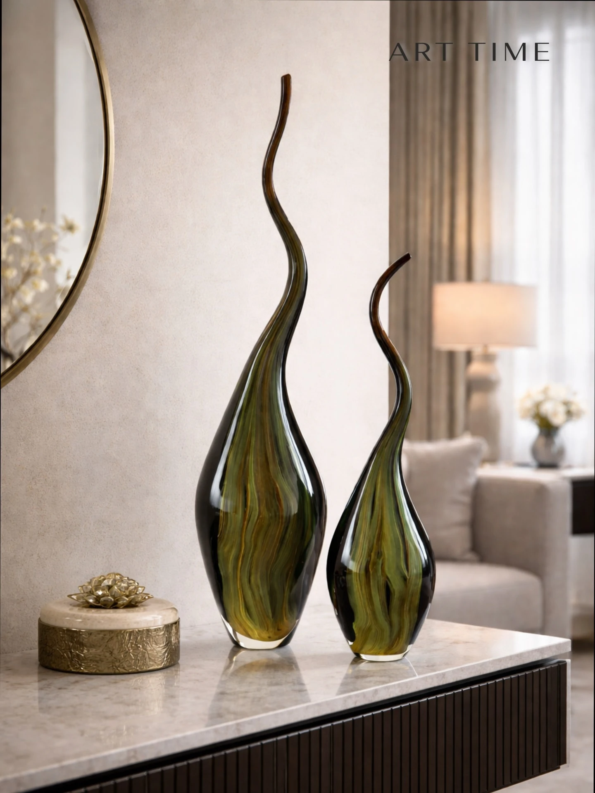
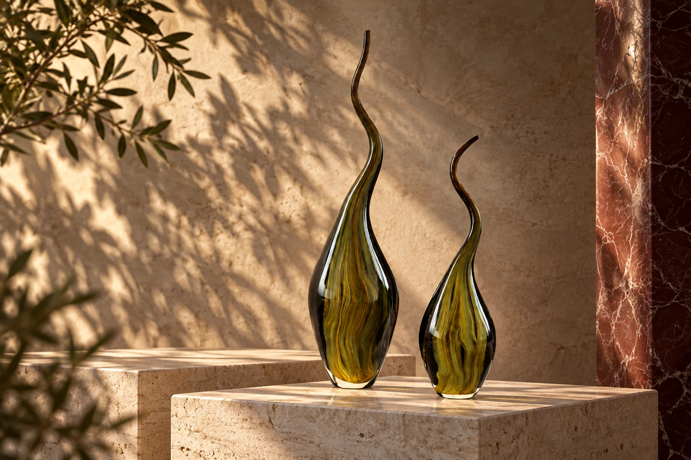
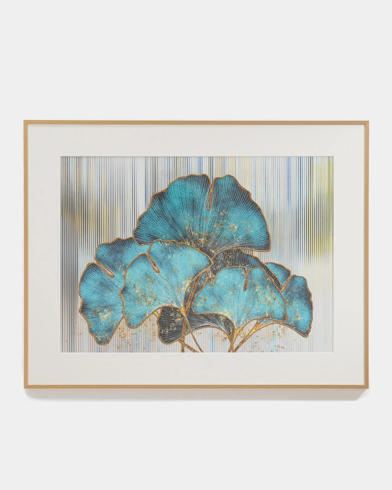
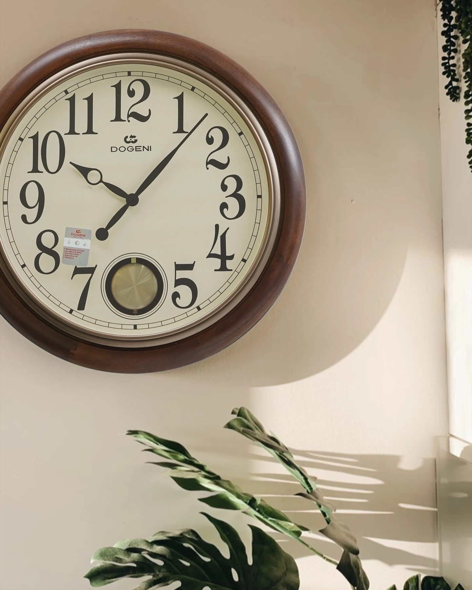
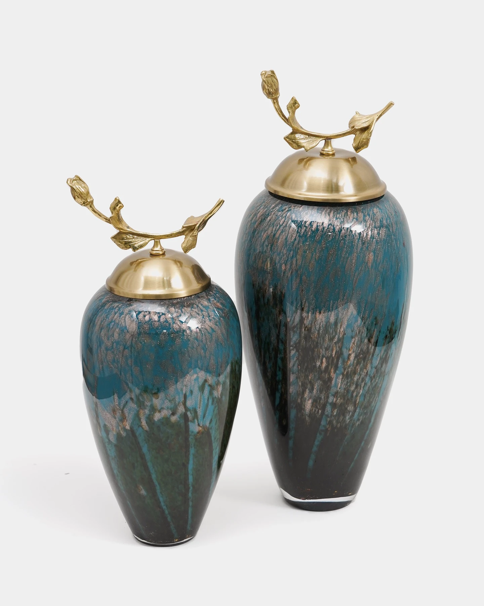
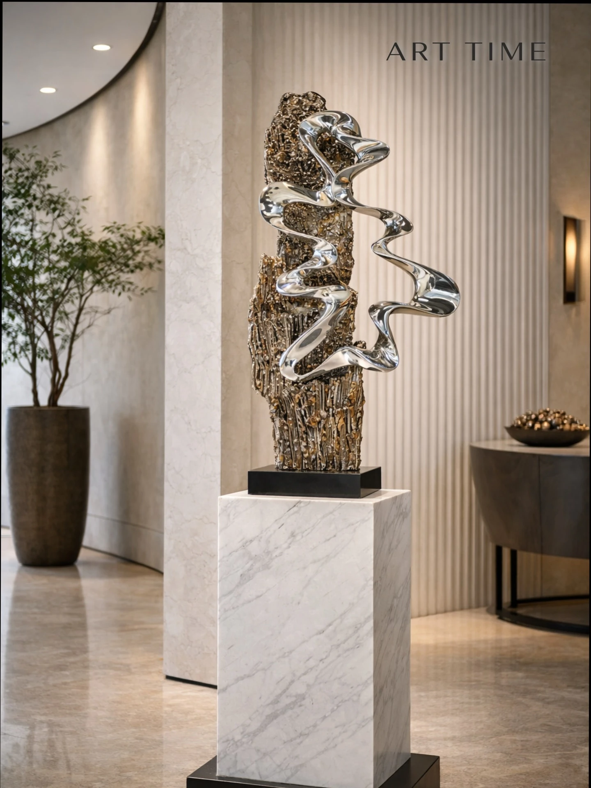
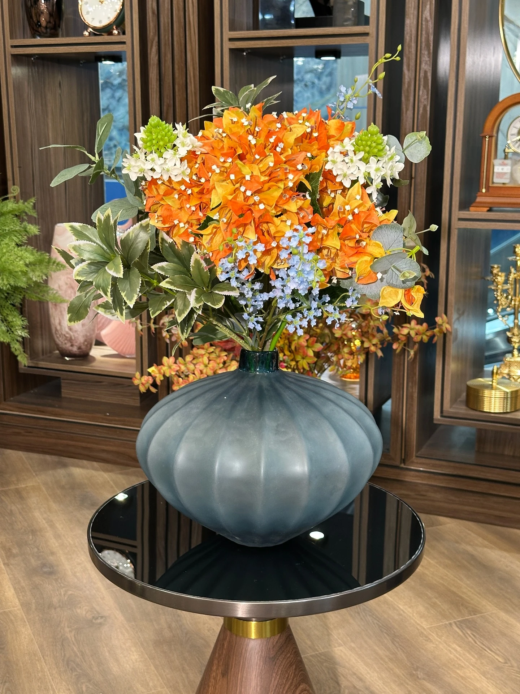
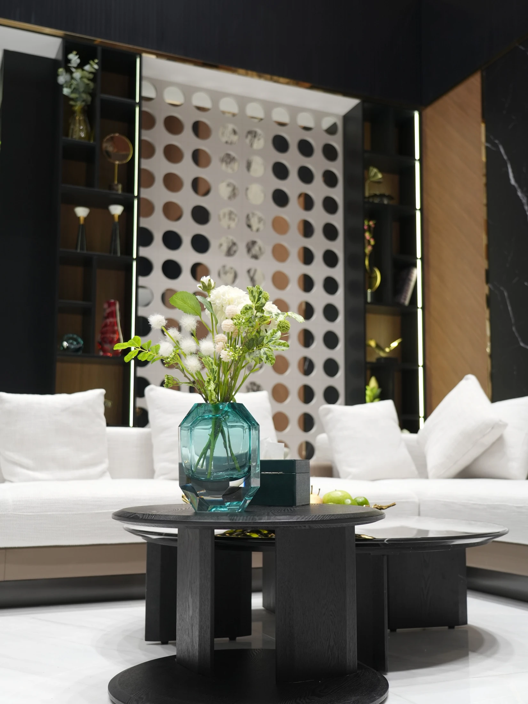

01 / Вазы
Скульптурные вазы из муранского стекла
Два вытянутых стеклянных силуэта в зелёно-янтарной гамме.
Смотреть коллекцию
Картины, часы, вазы и арт-объекты для вашего интерьера.
Открыть коллекциюФорма. Свет. Характер пространства.
Картины, часы, вазы и арт-объекты для вашего интерьера.

Два вытянутых стеклянных силуэта в зелёно-янтарной гамме.
Смотреть коллекцию
Полированная металлическая форма на тёмном основании.
Смотреть коллекциюВыберите предмет. Стоимость, размеры и наличие уточним при обращении.
16 предметов

Картины
Бирюзовые формы в светлой раме. Ручная работа; алюминиевый каркас.
Размер и исполнение уточним при обращении.
Уточнить по телефону ↗
Картины
Светлый береговой пейзаж в раме. Ручная работа.
160 × 80 см. Ручная работа, рама из пластика.
Уточнить по телефону ↗
Часы
Оранжевый циферблат и выразительная металлическая форма.
Диаметр 90 см. Бесшумный механизм.
Уточнить по телефону ↗
Часы
Контрастный круглый циферблат для современного интерьера.
Диаметр 50 см. Металлический корпус.
Уточнить по телефону ↗
Часы
Деревянная рама, светлый циферблат и крупные арабские цифры.
Размеры и исполнение уточним при обращении.
Уточнить по телефону ↗
Часы
Декоративный набор из часов и парных подсвечников на полке коллекции Art Time.
Размеры и состав набора уточним при обращении.
Уточнить по телефону ↗
Часы
Классические напольные часы в деревянном корпусе из витрины Art Time.
Размеры и механизм уточним при обращении.
Уточнить по телефону ↗
Вазы
Сочетание стеклянного сосуда и оранжевых цветов в светлом интерьере.
Муранское стекло, ручная работа. Размеры и состав композиции уточним.
Уточнить по телефону ↗
Вазы
Зелёно-янтарный градиент и вытянутый силуэт, показанные в интерьерной сцене бренда.
Муранское стекло, ручная работа.
Уточнить по телефону ↗
Вазы
Парные декоративные сосуды с фигурными верхними элементами.
Размеры, материал и состав пары уточним при обращении.
Уточнить по телефону ↗Вазы
Два вытянутых стеклянных силуэта в зелёно-янтарной гамме.
Муранское стекло, ручная работа. Предметы и комплектацию подберём отдельно.
Уточнить по телефону ↗
Вазы
Бирюзовый сосуд с декоративной металлической крышкой.
46 × 17 см. Хрусталь, металлическая крышка.
Уточнить по телефону ↗Вазы
Меньший вариант бирюзового сосуда из той же пары на фото.
37 × 15 см. Хрусталь, металлическая крышка.
Уточнить по телефону ↗Арт-объекты
Полированная металлическая форма на тёмном основании.
Размеры и материал уточним при обращении.
Уточнить по телефону ↗
Арт-объекты
Серебристая спиральная форма рядом с фактурным вертикальным элементом.
Размеры и состав композиции уточним при обращении.
Уточнить по телефону ↗
Композиции
Широкая ваза со светлыми и оранжевыми цветами, показанная в ассортименте Art Time.
Размеры и состав композиции уточним при обращении.
Уточнить по телефону ↗По этому запросу предметы не найдены.
Подбор предметов и декоративное наполнение реальных пространств.

Подбор предметов для входной зоны, холла, лестницы, зала, кухни и других комнат.

Картина, парный настенный декор и цветы объединили интерьерную композицию.

Подбор большой картины, хрустальной вазы и цветов, фруктового сосуда и салфетницы.

Подобраны декор для ниш, цветочная композиция и акценты для пространства.

Наполнение минус первого этажа и завершённый интерьер.
Учитываем пространство, цвета, мебель и пропорции. Подбираем картины, часы, вазы и аксессуары так, чтобы они стали частью общей композиции.
Обсудить задачуСпециалист может приехать и подобрать детали на месте. Расскажите о комнате и задаче — согласуем формат встречи и условия.
Обсудить задачуДоставим выбранные предметы и поможем разместить их в интерьере. Маршрут, сроки и условия обсуждаем при обращении.
Обсудить задачуСфотографируйте комнату и место для будущего акцента. Запишите размеры стены, полки или стола, отметьте основные цвета и расскажите, какие предметы ищете. Фотографии можно передать в Instagram Art Time вместе с запросом.
Да. Подбор учитывает пространство, стиль, цвета и пропорции. Можно начать с одного акцента или обсудить наполнение комнаты.
Выберите предмет и подготовьте запрос или позвоните. Актуальную стоимость, размеры и наличие уточним перед заказом.
Art Time находится в Ташкенте, на улице Тимура Малика, 3А. Перед визитом позвоните, чтобы согласовать встречу.
Подбор, доставка и размещение входят в направления работы Art Time. Условия для вашего пространства согласуем отдельно.
Расскажите о пространстве или выбранном предмете. Обсудим детали по телефону или в Instagram.
Свяжитесь с нами по телефону или в Instagram, чтобы обсудить предметы и подбор для вашего пространства.